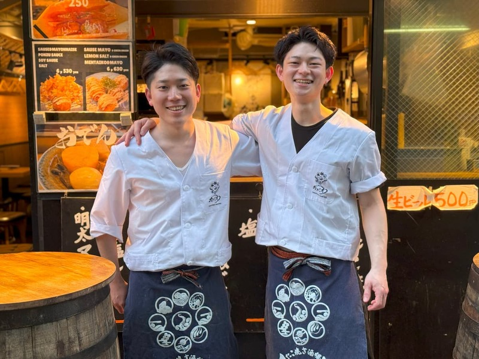
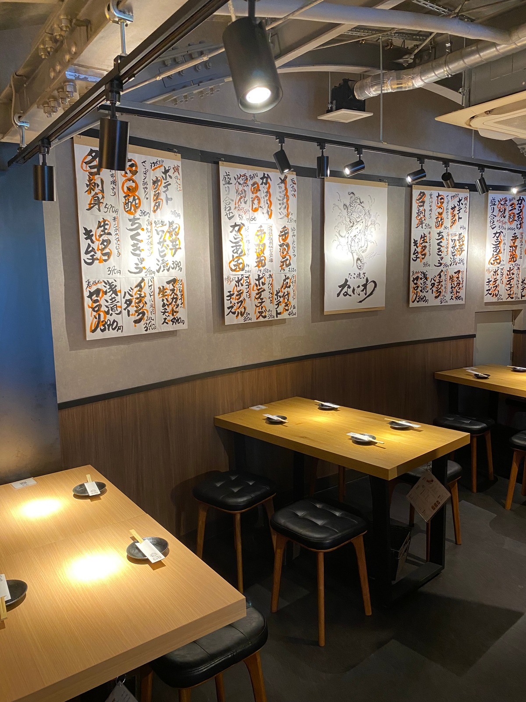

我们的“章鱼烧”追求松软绵密的口感，精选高汤，单吃也美味。面糊采用以昆布为基础，加入鲣鱼的混合高汤，清淡却充满鲜味，带来正宗的地道风味！

选用鸡翅根、鸡翅尖和鸡胸肉三种部位。鸡翅根和鸡翅尖将肉集中于尖端，鸡胸肉则厚切，充分吸收秘制高汤，外酥里嫩，鲜美多汁。
网络预约，24小时随时可用
点击此处预约（日文页面）
入职仅1个月就被选为新业态的创始成员，负责全菜单的研发，从零打造品牌。凭借独特的前SE分析力和丰富的美食体验，不断追求独一无二的美味与乐趣。
“章鱼烧”创业奋斗记（note）毕业于篮球名校，体育精神十足。以阳光的服务和在社团锻炼出的卓越领导力，带领团队不断前进。与店长川崎携手营造充满活力和笑容的店铺氛围，全力以赴！
